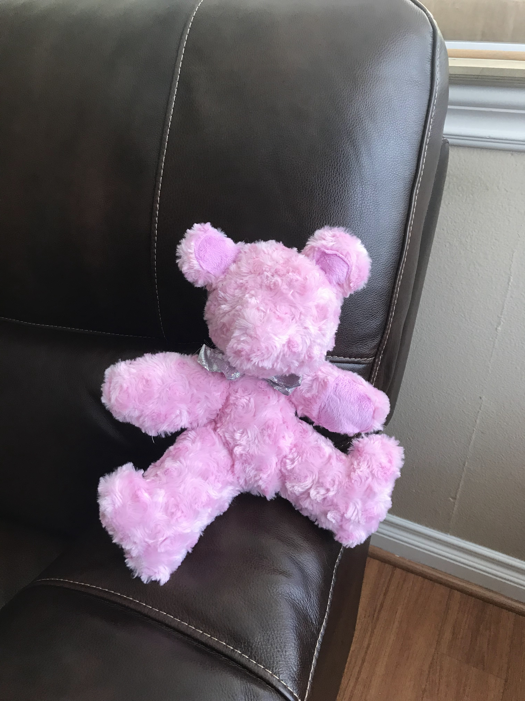

"A void in my heart,
The emptiness that craves to be filled to the brim
Music seems to soothe
Every time my heart aches I click shuffle
The same sound about loneliness turns on
It’s like someone screaming at me that I deserve it
I deserve to be alone in this world filled with many"
Stormy Night
"The sky is crying so hard
Who upset her so much
Her crying doesn’t seem like it will stop
The wind is pushing her around bullying her
Why don’t they let her cry in peace
She’s a delicate little bug
Crying all alone with so much anger and grief
She’s pushing everything and everyone away
All that she wants is to be alone to grief her lose
Her breathing patterns get normal
Until she remembers the best parts of her past
Then her breathing gets uneven and heavy
Poor soul not wanting to be comforted
But her crying seems to wake up the world"

Fig.1 -Teddy Bear I sewed together.Fig.2 -This is a carrot cake I made and decorated.Fig.3 -this is a Chritsmas Cake with trees on it.